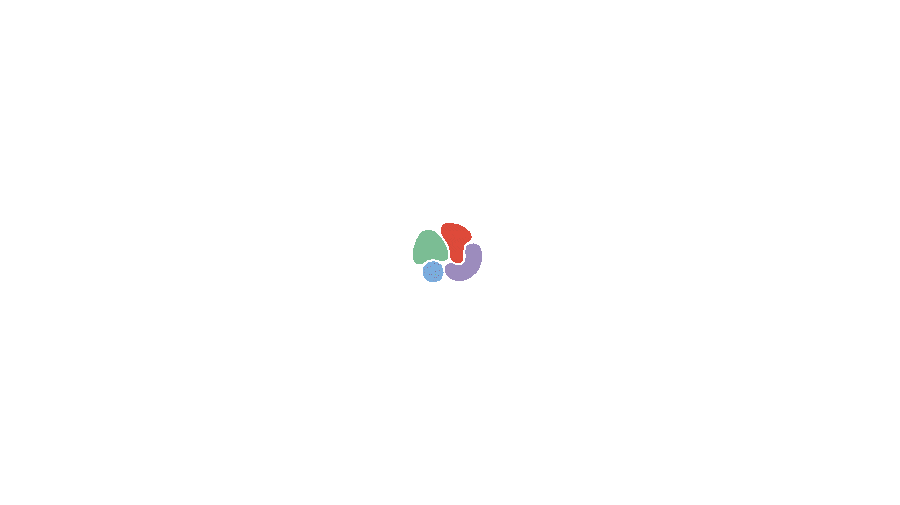
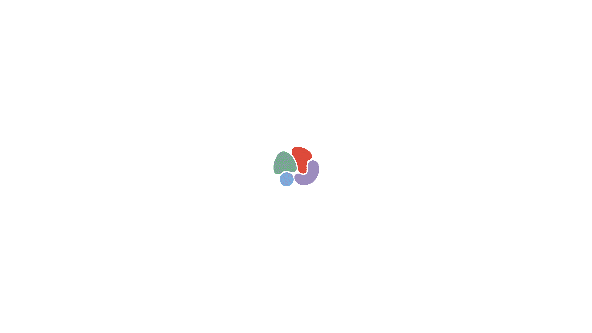
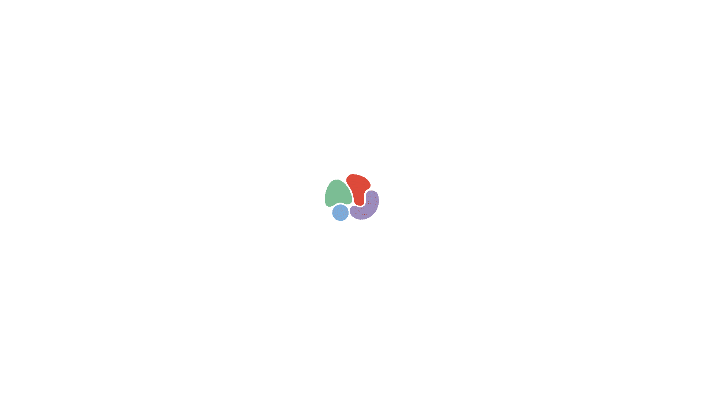
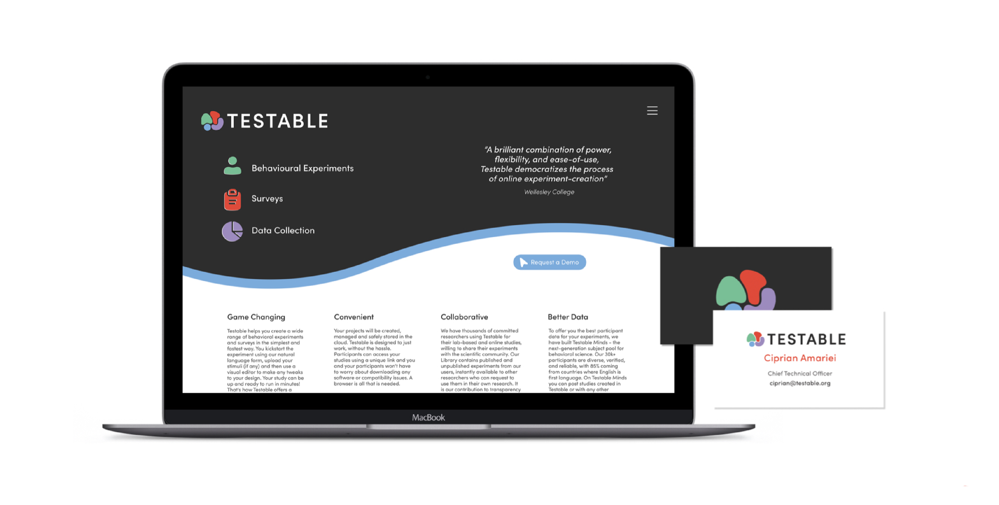
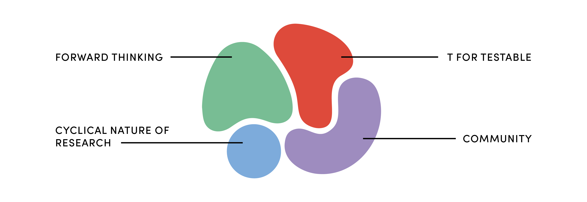
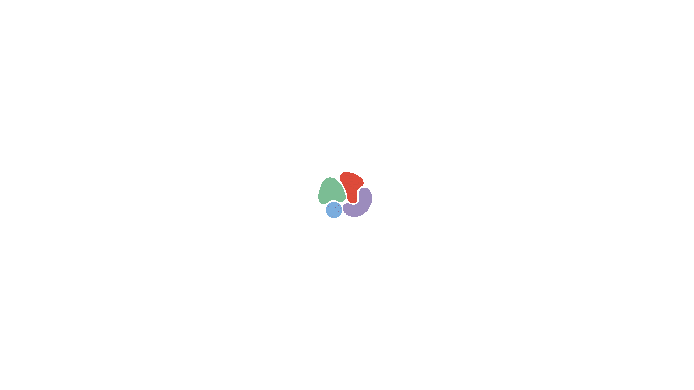
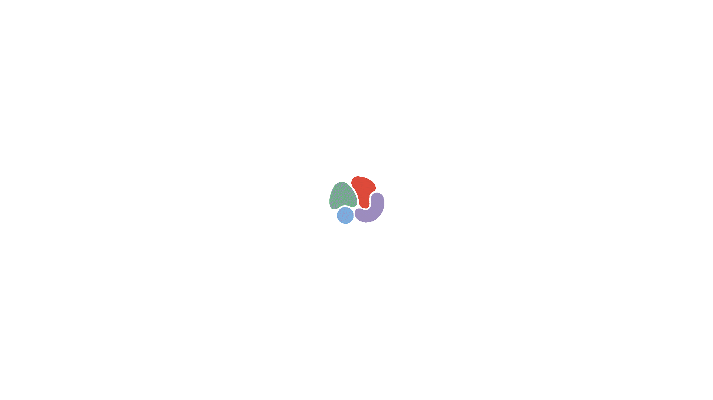
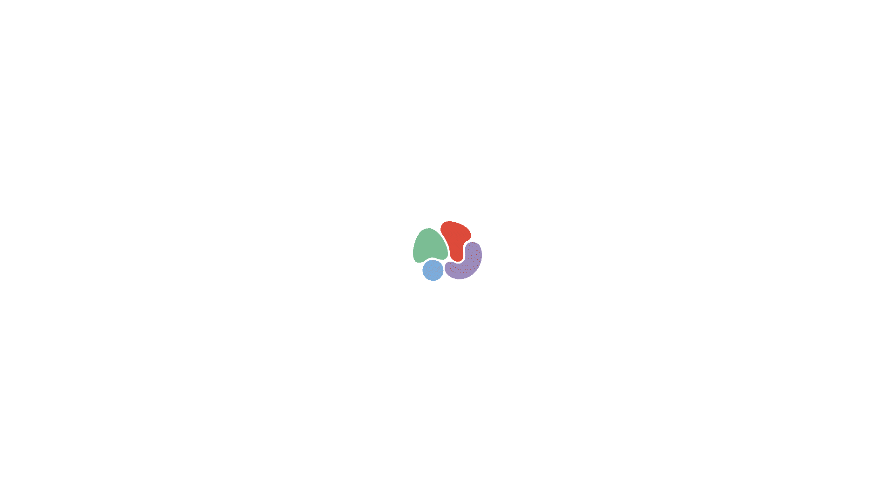
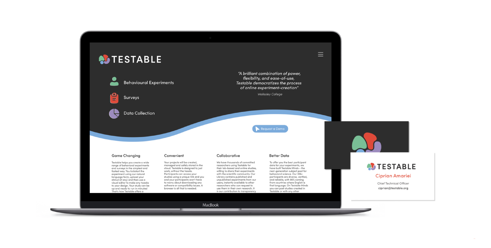
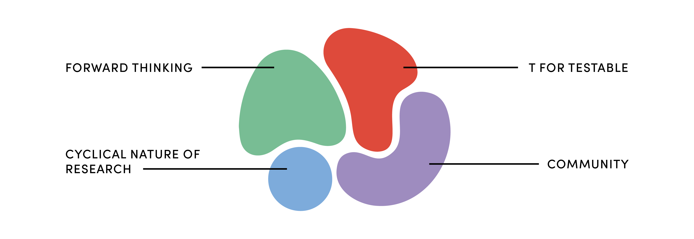
How do you differentiate a science-focused academic brand?
Testable is a behavioural experimentation, survey and data collection platform primarily focused on
psychological research.
As a team, we were pitching to modernise their brand, whilst steering clear from the typical science tropes
and colour schemes which currently oversaturate the market.
We ended up using aspects of gestalt theory in the application of the graphic devices, to pay homage to the
sector but also uniquely differentiate Testable from its competitors.
Collaborators: Arthi Rangaraj, Katherine Joubert, Oliver Wall.
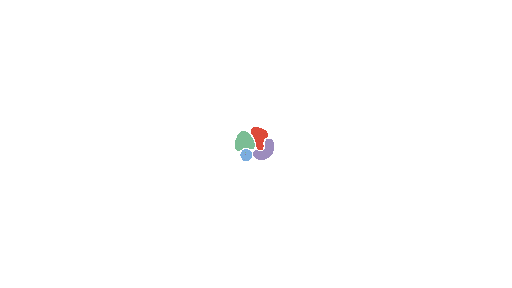
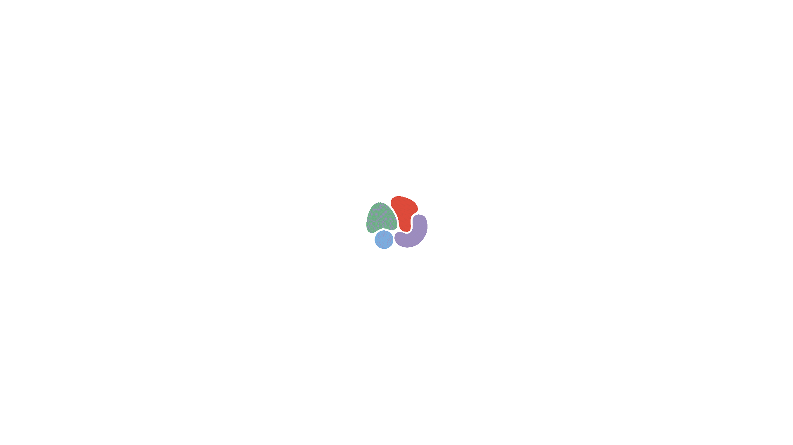
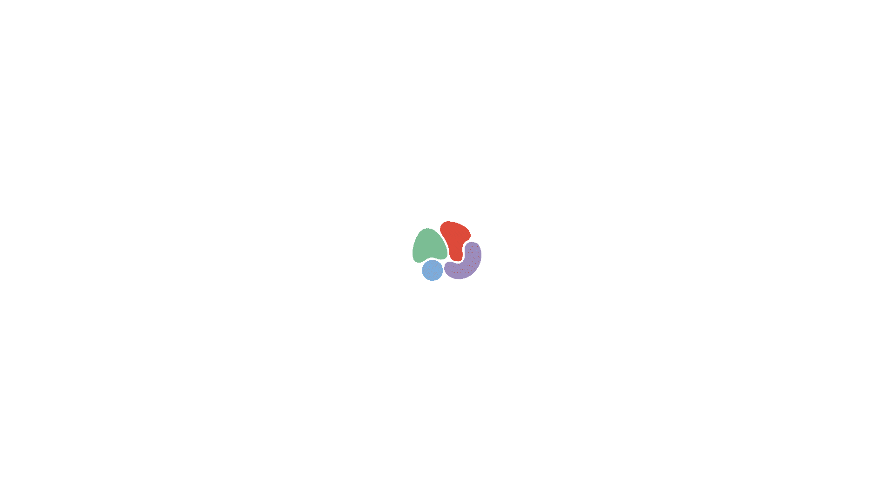
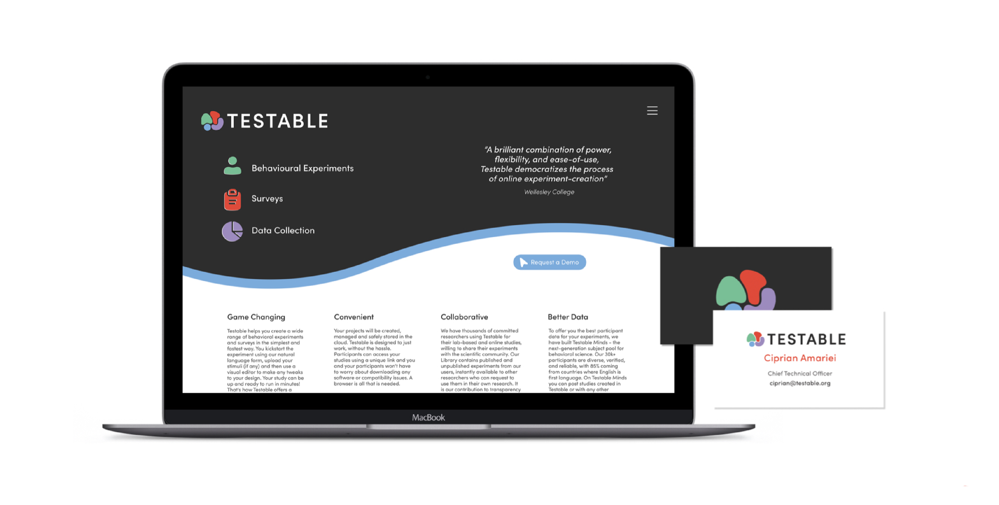
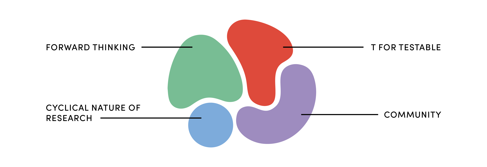